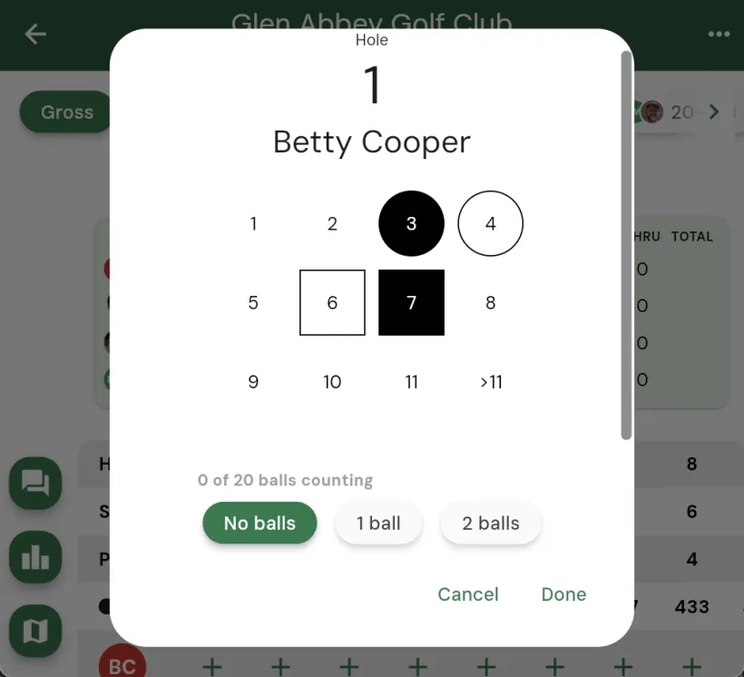
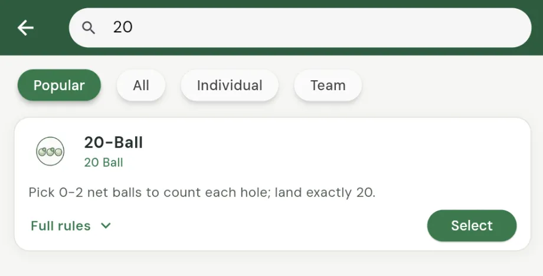
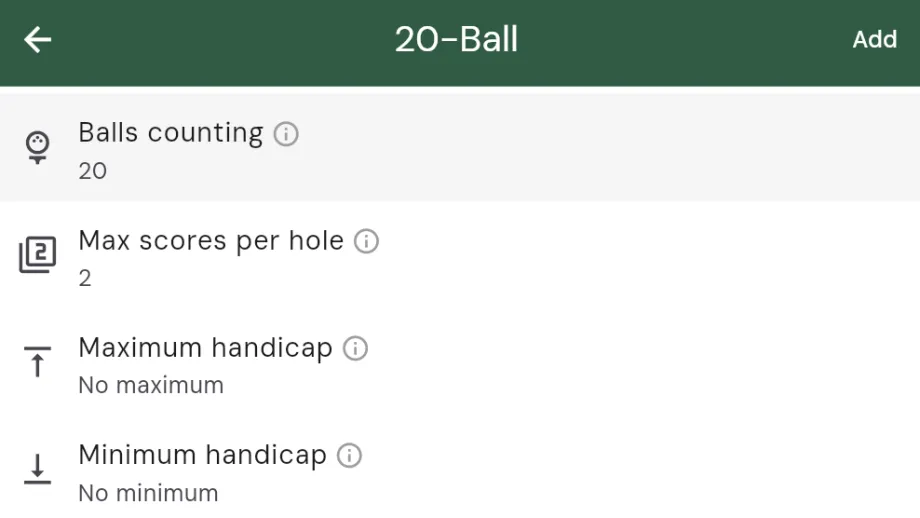

20-Ball Golf Format
Also known as: Tractor Pull, Twenty Ball
20-Ball is a team game with a twist: instead of a fixed number of scores counting every hole, your team is handed a budget of balls to spend across the round. On each hole you decide how many of your team’s net scores to count — none, one, or two — and by the 18th hole you must have spent exactly 20. The catch is that you commit before you tee off the next hole, so you’re always guessing whether a better hole is still ahead.
At a Glance
- Type
- Team game
- Team size
- 2–8 players (most commonly 2)
- Scoring
- Net stroke total at full (100%) handicap
- Balls to count
- Exactly 20 across the round (adjustable)
- Wins
- Lowest team total
The Rules
- Everyone plays their own ball. Scores are net, at full (100%) handicap.
- After each hole, your two-person team chooses how many of your net scores count on that hole: none, one, or two. Counting one uses your lower net score; counting two uses both.
- You make the call before teeing off on the next hole, so you can’t go back and change it once you’ve moved on.
- Across all 18 holes your team must have exactly 20 balls counting.
- Your team score is the total of every counted net score. The lowest total wins.
Example
A two-person team works through a few holes, spending from their budget of 20:
The team keeps going like this, counting two on their best holes and none on their worst, until they reach exactly 20 counted balls by the end of the round. Whichever team has the lowest total of those 20 net scores wins.
Budgeting Your Balls
What makes 20-Ball interesting is that you spend your 20 balls as you go, without knowing what the back nine holds. Count two on every birdie early and you might be forced to count your worst scores at the end; hold back too much and you’ll waste good holes.
Squabbit shows a running tally — for example “12 of 20 balls counting” — every time you score a hole, so you always know how much budget is left. When the math tightens up and you have to count a certain number to finish on 20, the choice is made for you and those balls are counted automatically.

Options You Can Change
20-Ball ships ready to play as the classic two-person, 20-ball game, but a few things can be adjusted when you set it up:
Balls counting
The total number of balls your team must count across the round. 20 is the standard (and the namesake), but you can set a different target to make a shorter or longer version of the game.
Max scores per hole
The most net scores a team can count on any single hole. The default is two, matching a two-person team. If you play with bigger teams you can raise this so more balls can count on a strong hole.
Team size
Teams are two players by default, but you can set anywhere from 2 to 8. Your team never counts more balls on a hole than it has players.
Setting Up in Squabbit
To play 20-Ball in Squabbit:
- Create a new tournament, or add a game to a casual round, and choose 20-Ball as the format (you can also search for “Tractor Pull”).
- Set your team size — two players is the classic game.
- Optionally adjust Balls counting and Max scores per hole at the top of the format settings.
- Add players and assign them to teams.


During the round, each player enters their own hole score as usual. On the score screen your team picks how many balls to count on that hole, and the running budget keeps you on track to finish on exactly your target.